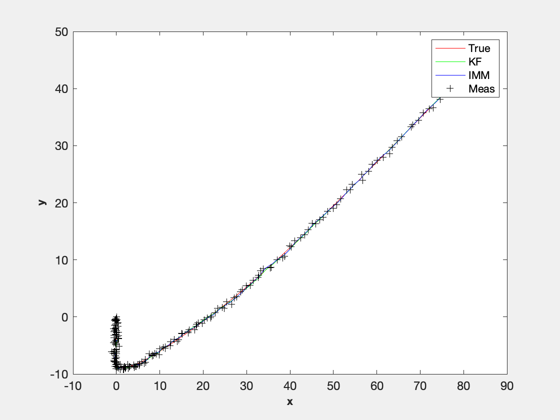
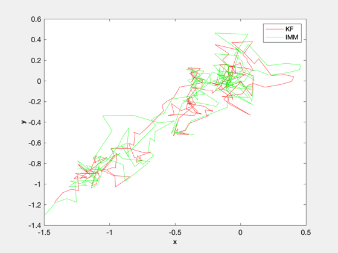
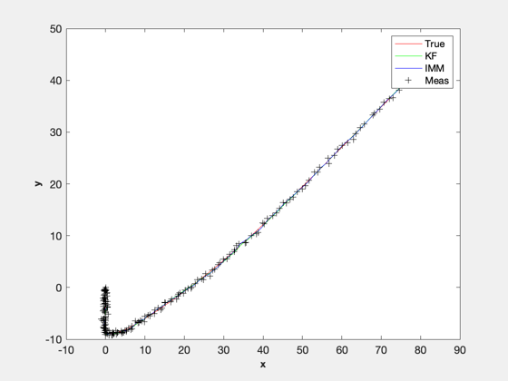
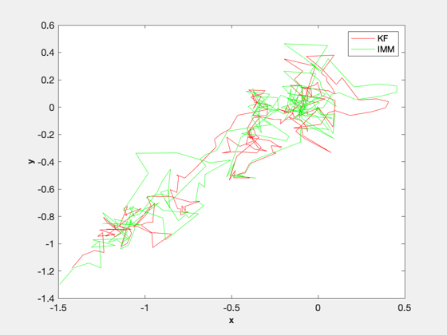

IMM test using a Continuous Wiener process acceleration (CWPA) model.
The model switches between two acceleration noise levels. It will print the two generated plots showing the trajectories and the trajectory errors.
Since version 11.
%--------------------------------------------------------------------------
%-------------------------------------------------------------------------- % Copyright (c) 2012, 2014 Princeton Satellite Systems, Inc. % All rights reserved. %-------------------------------------------------------------------------- % This loops for a Monte Carlo simulation % Make zEnd > 1 for multiple simulations %---------------------------------------- zEnd = 2; meanKF = zeros(1,zEnd); meanIMM = zeros(1,zEnd); for z = 1:zEnd % Number of steps %---------------- n = 200; lowNoise = 0.01; % The a priori covariance %------------------------ p0 = diag([0.1 0.1 0.1 0.1 0.5 0.5]); % Create the discrete time model %------------------------------- dT = 0.1; [a, h, q] = CWPAModel( dT ); % When to use the different models %--------------------------------- model = ones(1,n); model( 51: 70) = 2; model(121:150) = 2; % Measurement noise %------------------ r = diag([0.1 0.1]); sR = sqrt(r); % Process noise is only acceleration %----------------------------------- l2 = [0 0;0 0;0 0;0 0;1 0;0 1]; l1 = l2*sqrt(lowNoise); % Run the simulation %------------------- x = [0;0;0;-1;0;0]; xS = zeros(6,n); y = zeros(2,n); for k = 1:n xS(:,k) = x; y(:,k) = h*x + sR*randn(2,1); if( model(k) == 1 ) x = a*x + q*l1*randn(2,1); else x = a*x + q*l2*randn(2,1); end end % Test with the Kalman Filter %---------------------------- mF = zeros(6,n); m = zeros(6,1); p = p0; for k = 1:n mF(:,k) = m; [m, p] = KFPredict( m, p, a, q*lowNoise ); [m, p] = KFUpdate( m, p, y(:,k), h, r ); end % Test with IMM %-------------- mI = zeros(6,n); m = [0;0;0;-1;0;0]; % The IMM data structure %------------------------ dIMM.muI = [0.9 0.1]; % Probability of being in mode 1 or 2 dIMM.pIJ = [0.98 0.02; 0.02 0.98]; % Transition probability dIMM.pI = {p0 p0}; dIMM.a = {a a}; dIMM.q = {q*lowNoise q}; dIMM.r = {r r}; dIMM.h = {h h}; dIMM.mI = [m m]; dIMM.use = 'kf'; % Use a linear discrete Kalman Filter dIMM.m = m; muI = zeros(2,n); for k = 1:n mI(:,k) = dIMM.m; muI(:,k) = dIMM.muI; dIMM.y = y(:,k); dIMM = IMMPredict( dIMM ); dIMM = IMMUpdate( dIMM ); end % Plot the results %----------------- if( z == zEnd ) NewFig('Trajectory') plot(xS(1,:),xS(2,:),'r',mF(1,:),mF(2,:),'g',mI(1,:),mI(2,:),'b',y(1,:),y(2,:),'k+'); XLabelS('x') YLabelS('y') grid legend('True', 'KF', 'IMM', 'Meas') NewFig('Trajectory Error') plot(mF(1,:)-xS(1,:),mF(2,:)-xS(2,:),'r',mI(1,:)-xS(1,:),mI(2,:)-xS(2,:),'g'); XLabelS('x') YLabelS('y') grid legend('KF', 'IMM') end meanKF(z) = sum(sqrt((mF(1,:)-xS(1,:)).^2 + (mF(2,:)-xS(2,:)).^2))/n; meanIMM(z) = sum(sqrt((mI(1,:)-xS(1,:)).^2 + (mI(2,:)-xS(2,:)).^2))/n; [t, tL] = TimeLabl((0:(n-1))*dT); Plot2D( t, muI, tL, 'Probability', 'Model Probability') legend('Model 1', 'Model 2' ); end mKF = mean(meanKF); mIM = mean(meanIMM); DispWithTitle( mKF, 'Mean KF'); DispWithTitle( mIM, 'Mean IMM'); %-------------------------------------- % PSS internal file version information %-------------------------------------- % $Date$ % $Id: 6596e91f5e945e8b96fae12073e1accec9a00aeb $
grid =
0 0 0 0 0 0
0 0 0 0 0 0
0 1 0 1 0 0
0 1 0 1 1 0
0 1 0 0 0 0
0 0 0 0 0 0
grid =
0 0 0 0 0 0
0 0 0 0 0 0
0 1 0 1 0 0
0 1 0 1 1 0
0 1 0 0 0 0
0 0 0 0 0 0
Mean KF
0.52087
Mean IMM
0.47963
  
 